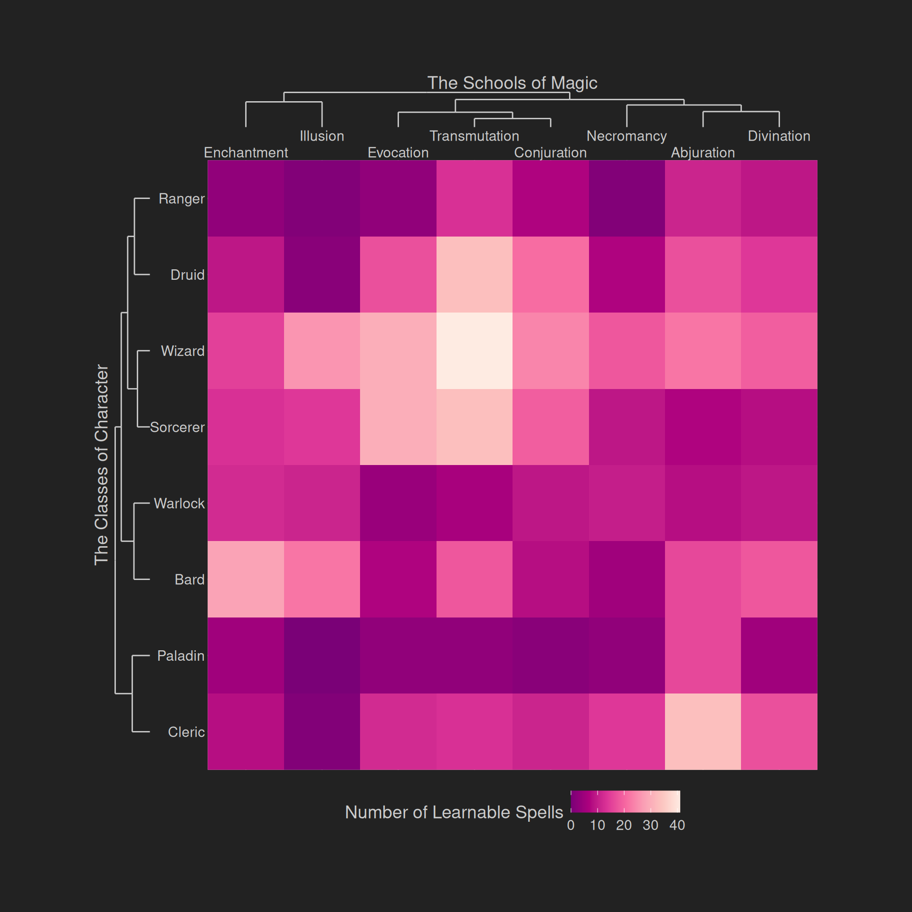
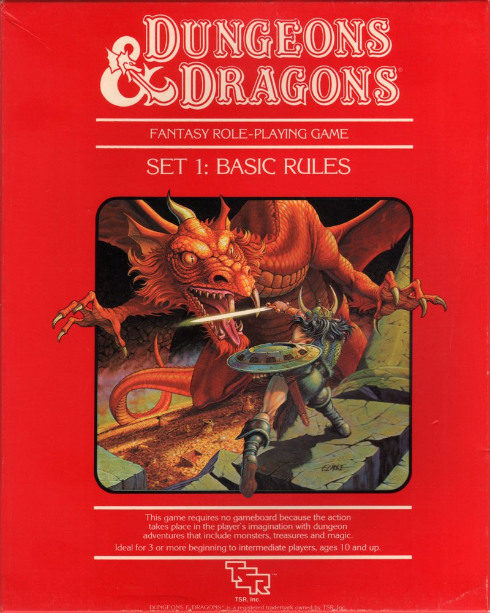
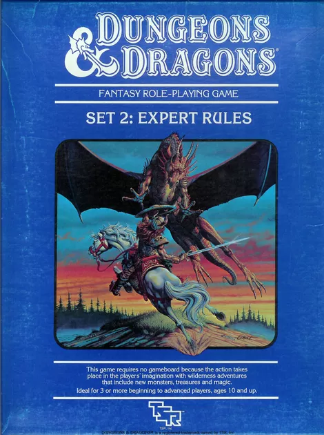
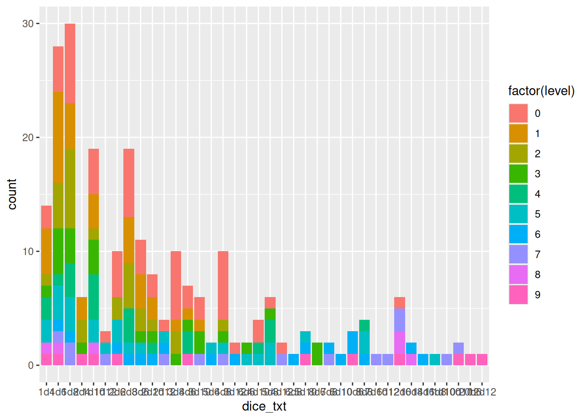
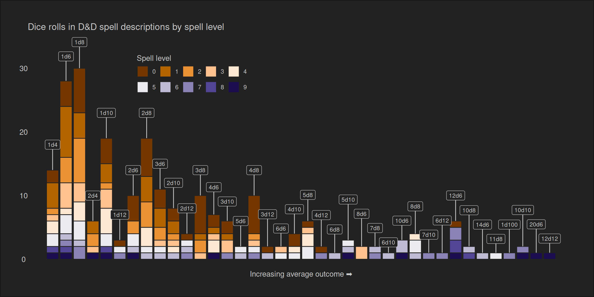
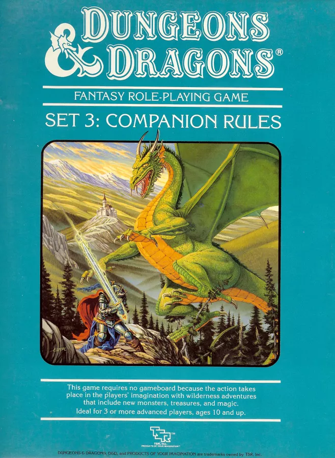
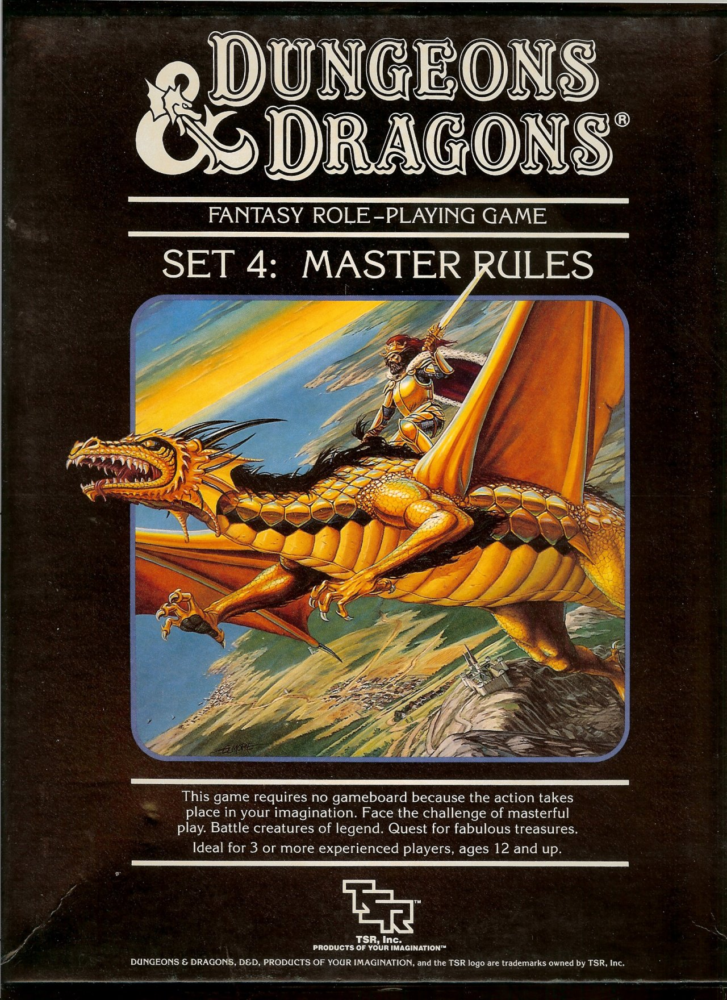
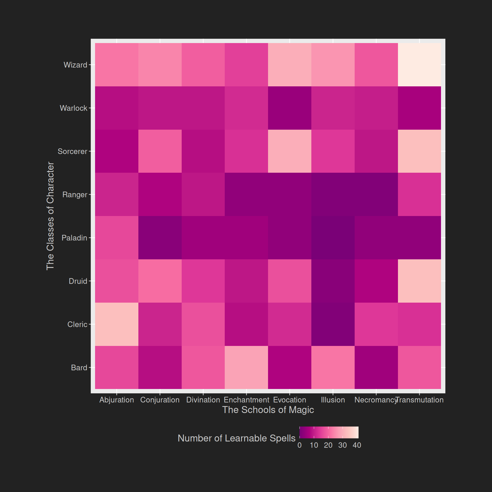
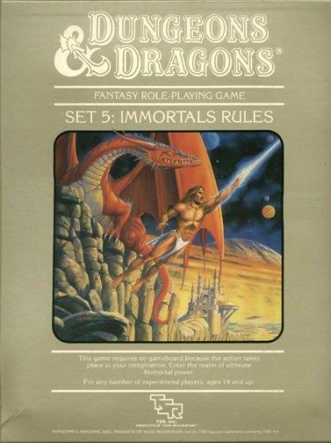

![]()
library(dplyr)
library(tidyr)
library(purrr)
library(readr)
library(tibble)
library(ggplot2)
library(stringr)
library(forcats)
library(ggrepel)
library(legendry)In the dying days of 2024 I found myself doing Tidy Tuesday again. I really like playing around with data wrangling and visualisation in these exercises, and I wish I were able to find the time to do it more often. But life so often gets in the way, and I suppose I should simply be happy that I get to do it sometimes. Anyway, one of the recent Tidy Tuesday data sets is related to Dungeons & Dragons, which I used to play when I was a teenager, and my children are pestering me to play again now that they’re old enough to get into it. So I decided to play around with this data set as part of a totally unrelated side project (for a different post!) and I ended up posting these two images to social media:


A couple of people emailed me asking for the code for these, and I haven’t gotten around to replying to them yet. Part of the reason I didn’t reply initially was that the code was tangled up with the code for the other side project, which made it a little awkward to explain without going down a whole other rabbit hole.
So now I find myself rewriting the code in a slightly more palatable form and posting it to this blog. I mean, why not? It’s the first day of a new year, and I have nothing better to do this morning.
The spells data
The spells data that I’m using here comes from the TidyTuesday D&D Spells data set. The data set was compiled by Jon Harmon, and originates in the recently released Dungeons & Dragons Free Rules. If you’ve played D&D before, this should be quite familiar:
spells <- read_csv("./spells.csv", show_col_types = FALSE)
print(spells)# A tibble: 314 × 27
name level school bard cleric druid paladin ranger sorcerer warlock
<chr> <dbl> <chr> <lgl> <lgl> <lgl> <lgl> <lgl> <lgl> <lgl>
1 Acid Spl… 0 evoca… FALSE FALSE FALSE FALSE FALSE TRUE FALSE
2 Aid 2 abjur… TRUE TRUE TRUE TRUE TRUE FALSE FALSE
3 Alarm 1 abjur… FALSE FALSE FALSE FALSE TRUE FALSE FALSE
4 Alter Se… 2 trans… FALSE FALSE FALSE FALSE FALSE TRUE FALSE
5 Animal F… 1 encha… TRUE FALSE TRUE FALSE TRUE FALSE FALSE
6 Animal M… 2 encha… TRUE FALSE TRUE FALSE TRUE FALSE FALSE
7 Animal S… 8 trans… FALSE FALSE TRUE FALSE FALSE FALSE FALSE
8 Animate … 3 necro… FALSE TRUE FALSE FALSE FALSE FALSE FALSE
9 Animate … 5 trans… TRUE FALSE FALSE FALSE FALSE TRUE FALSE
10 Antilife… 5 abjur… FALSE FALSE TRUE FALSE FALSE FALSE FALSE
# ℹ 304 more rows
# ℹ 17 more variables: wizard <lgl>, casting_time <chr>, action <lgl>,
# bonus_action <lgl>, reaction <lgl>, ritual <lgl>,
# casting_time_long <chr>, trigger <chr>, range <chr>, range_type <chr>,
# verbal_component <lgl>, somatic_component <lgl>,
# material_component <lgl>, material_component_details <chr>,
# duration <chr>, concentration <lgl>, description <chr>If you don’t already know what you’re looking at, here’s a quick summary of the columns that I’m actually using for these plots:
name: the name of the spell, obviouslylevel: the spell difficulty level, with level 0 spells (cantrips) being the easiest and level 9 being the most difficultschool: which of the nine schools of magic (e.g., enhantment, illusion, necromancy, etc) does this spell belong to?bard,cleric,druid, etc: is this spell learnable by characters that belong to this class?description: the text for the spell description
The values stored in most of these variables are pretty straightforward, but it’s probably useful to look at the description variable in particular since that one is a long string. Here’s a few spell descriptions:
describe_spell <- function(spell = NULL) {
if (is.null(spell)) spell <- sample(spells$name, 1L)
spells |>
filter(name == spell) |>
pull(description) |>
str_wrap(width = 70) |>
cat()
}
describe_spell("Acid Splash")You create an acidic bubble at a point within range, where it explodes
in a 5-foot-radius Sphere. Each creature in that Sphere must succeed
on a Dexterity saving throw or take 1d6 Acid damage. Cantrip Upgrade.
The damage increases by 1d6 when you reach levels 5 (2d6), 11 (3d6),
and 17 (4d6).describe_spell("Fireball")A bright streak flashes from you to a point you choose within range
and then blossoms with a low roar into a fiery explosion. Each
creature in a 20-foot-radius Sphere centered on that point makes a
Dexterity saving throw, taking 8d6 Fire damage on a failed save or
half as much damage on a successful one. Flammable objects in the area
that aren’t being worn or carried start burning. Using a Higher-Level
Spell Slot. The damage increases by 1d6 for each spell slot level
above 3.describe_spell("Prismatic Spray")Eight rays of light flash from you in a 60-foot Cone. Each creature
in the Cone makes a Dexterity saving throw. For each target, roll 1d8
to determine which color ray affects it, consulting the Prismatic Rays
table. Prismatic Rays 1d8 Ray 1 Red. Failed Save: 12d6 Fire damage.
Successful Save: Half as much damage. 2 Orange. Failed Save: 12d6 Acid
damage. Successful Save: Half as much damage. 3 Yellow. Failed Save:
12d6 Lightning damage. Successful Save: Half as much damage. 4 Green.
Failed Save: 12d6 Poison damage. Successful Save: Half as much damage.
5 Blue. Failed Save: 12d6 Cold damage. Successful Save: Half as much
damage. 6 Indigo. Failed Save: The target has the Restrained condition
and makes a Constitution saving throw at the end of each of its turns.
If it successfully saves three times, the condition ends. If it fails
three times, it has the Petrified condition until it is freed by an
effect like the Greater Restoration spell. The successes and failures
needn’t be consecutive; keep track of both until the target collects
three of a kind. 7 Violet. Failed Save: The target has the Blinded
condition and makes a Wisdom saving throw at the start of your next
turn. On a successful save, the condition ends. On a failed save,
the condition ends, and the creature teleports to another plane of
existence (DM’s choice). 8 Special. The target is struck by two rays.
Roll twice, rerolling any 8.
The spell dice plot
Reading these spell descriptions I had the thought that it would be interesting to explore the distribution of dice rolls mentioned in the spell descriptions. In the description for “Acid Splash”, for example, it refers to a 1d6 roll, a 2d6 roll, a 3d6 roll, and a 4d6 roll. “Fireball” mentions 8d6 and 1d6 in the text. What does the distribution of these dice rolls look like.
Data wrangling
To start with let’s think about what information we want to extract from the spell descriptions, and how we want to do it. Using str_extract_all() and a bit of regular expression sorcery, we can pull this information out of a description. Here’s what we get for the three spells I listed above:
spells |>
filter(name %in% c("Acid Splash", "Fireball", "Prismatic Spray")) |>
pull(description) |>
str_extract_all("\\b\\d+d\\d+\\b")[[1]]
[1] "1d6" "1d6" "2d6" "3d6" "4d6"
[[2]]
[1] "8d6" "1d6"
[[3]]
[1] "1d8" "1d8" "12d6" "12d6" "12d6" "12d6" "12d6"This list highlights a decision we need to make about counting tokens: in the “Prismatic Spray” description, there are five separate mentions of a 12d6 dice roll. Do we want to count all five of these, or to we want to consider unique mentions only? After a bit of thought I ended up going with the latter, so the extraction code would look like this:
spells |>
filter(name %in% c("Acid Splash", "Fireball", "Prismatic Spray")) |>
pull(description) |>
str_extract_all("\\b\\d+d\\d+\\b") |>
map(unique)[[1]]
[1] "1d6" "2d6" "3d6" "4d6"
[[2]]
[1] "8d6" "1d6"
[[3]]
[1] "1d8" "12d6"Doing this within a data frame produces a dice_txt list column:
spells |>
select(name, level, description) |>
mutate(
dice_txt = description |>
str_extract_all("\\b\\d+d\\d+\\b") |>
map(unique)
)# A tibble: 314 × 4
name level description dice_txt
<chr> <dbl> <chr> <list>
1 Acid Splash 0 "You create an acidic bubble at a point… <chr>
2 Aid 2 "Choose up to three creatures within ra… <chr>
3 Alarm 1 "You set an alarm against intrusion. Ch… <chr>
4 Alter Self 2 "You alter your physical form. Choose o… <chr>
5 Animal Friendship 1 "Target a Beast that you can see within… <chr>
6 Animal Messenger 2 "A Tiny Beast of your choice that you c… <chr>
7 Animal Shapes 8 "Choose any number of willing creatures… <chr>
8 Animate Dead 3 "Choose a pile of bones or a corpse of … <chr>
9 Animate Objects 5 "Objects animate at your command. Choos… <chr>
10 Antilife Shell 5 "An aura extends from you in a 10-foot … <chr>
# ℹ 304 more rowsList columns aren’t the easiest thing to visualise, so I’ll use the unnest_longer() function to produce a tidy data set that has one row per unique dice roll mention:
spells |>
select(name, level, description) |>
mutate(
dice_txt = description |>
str_extract_all("\\b\\d+d\\d+\\b") |>
map(unique)
) |>
unnest_longer(
col = "dice_txt",
values_to = "dice_txt",
indices_to = "position"
)# A tibble: 236 × 5
name level description dice_txt position
<chr> <dbl> <chr> <chr> <int>
1 Acid Splash 0 "You create an acidic bubble at … 1d6 1
2 Acid Splash 0 "You create an acidic bubble at … 2d6 2
3 Acid Splash 0 "You create an acidic bubble at … 3d6 3
4 Acid Splash 0 "You create an acidic bubble at … 4d6 4
5 Alter Self 2 "You alter your physical form. C… 1d6 1
6 Animate Objects 5 "Objects animate at your command… 1d4 1
7 Animate Objects 5 "Objects animate at your command… 1d6 2
8 Animate Objects 5 "Objects animate at your command… 1d12 3
9 Animate Objects 5 "Objects animate at your command… 2d6 4
10 Animate Objects 5 "Objects animate at your command… 2d12 5
# ℹ 226 more rowsWith a little more data wrangling, we can carve up a dice_txt value like “3d6” into the number of dice to be rolled (i.e. die_num is 3), the number of sides on the die to be rolled (i.e., die_die is 6), and the average value that you’d get from rolling these dice (i.e., die_val is 10.5). Here’s the final processed data:
dice_dat <- spells |>
select(name, level, description) |>
mutate(
dice_txt = description |>
str_extract_all("\\b\\d+d\\d+\\b") |>
map(unique)
) |>
unnest_longer(
col = "dice_txt",
values_to = "dice_txt",
indices_to = "position"
) |>
mutate(
dice_num = dice_txt |> str_extract("\\d+(?=d)") |> as.numeric(),
dice_die = dice_txt |> str_extract("(?<=d)\\d+") |> as.numeric(),
dice_val = dice_num * (dice_die + 1)/2,
dice_txt = factor(dice_txt) |> fct_reorder(dice_val)
)
print(dice_dat)# A tibble: 236 × 8
name level description dice_txt position dice_num dice_die dice_val
<chr> <dbl> <chr> <fct> <int> <dbl> <dbl> <dbl>
1 Acid Spla… 0 "You creat… 1d6 1 1 6 3.5
2 Acid Spla… 0 "You creat… 2d6 2 2 6 7
3 Acid Spla… 0 "You creat… 3d6 3 3 6 10.5
4 Acid Spla… 0 "You creat… 4d6 4 4 6 14
5 Alter Self 2 "You alter… 1d6 1 1 6 3.5
6 Animate O… 5 "Objects a… 1d4 1 1 4 2.5
7 Animate O… 5 "Objects a… 1d6 2 1 6 3.5
8 Animate O… 5 "Objects a… 1d12 3 1 12 6.5
9 Animate O… 5 "Objects a… 2d6 4 2 6 7
10 Animate O… 5 "Objects a… 2d12 5 2 12 13
# ℹ 226 more rowsNotice that this processed version of the data codes dice_txt as a factor, and the levels are arranged by increasing dice_val. That’s the mechanism by which the die rolls will be ordered sensibly in the plot.

Making the plot
A basic version of the plot we want to create looks like this:
ggplot(dice_dat, aes(dice_txt, fill = factor(level))) + geom_bar()
There’s a lot of tinkering required to make it look pretty, but this is essentially the data we want to display and the format we want it to be displayed in. The full code for the visualisation looks like this:
palette <- hcl.colors(n = 10, palette = "PuOr")
labs <- dice_dat |>
summarise(
dice_txt = first(dice_txt),
count = n(),
.by = dice_txt
)
pic <- ggplot(
data = dice_dat,
mapping = aes(
x = dice_txt,
fill = factor(level)
)
) +
geom_bar(color = "#222") +
geom_label_repel(
data = labs,
mapping = aes(
x = dice_txt,
y = count,
label = dice_txt
),
size = 3,
direction = "y",
seed = 1,
nudge_y = 4,
color = "#ccc",
fill = "#222",
arrow = NULL,
inherit.aes = FALSE
) +
scale_fill_manual(
name = "Spell level",
values = palette
) +
scale_x_discrete(
name = "Increasing average outcome \u27a1",
breaks = NULL,
expand = expansion(.05)
) +
scale_y_continuous(name = NULL) +
labs(title = "Dice rolls in D&D spell descriptions by spell level") +
theme_void() +
theme(
plot.background = element_rect(fill = "#222"),
text = element_text(color = "#ccc"),
axis.text = element_text(color = "#ccc"),
axis.title = element_text(color = "#ccc"),
plot.margin = unit(c(1, 1, 1, 1), units = "cm"),
legend.position = "inside",
legend.position.inside = c(.3, .825),
legend.direction = "horizontal",
legend.title.position = "top",
legend.byrow = TRUE
)
plot(pic)
Very pretty.
There’s a small mystery that this plot leads to. As a general pattern, the low-level spells tend to mention die rolls with lower average value when compared to higher-level spells (i.e., there’s lots of brown and orange bars on the left, and mostly blueish/purple bars on the right). That makes sense, especially because the dice rolls mentioned in spell descriptions are usually describing the amount of damage the spell does.
So what’s the story with this one weird outlier, the level 0 spell that mentions a 12d6 roll? To answer this we need to work out which spell it is:
dice_dat |>
filter(level == 0 & dice_txt == "12d6") |>
pull(name)[1] "Druidcraft"Now let’s look at the description:
describe_spell("Druidcraft")Whispering to the spirits of nature, you create one of the following
effects within range. Weather Sensor. You create a Tiny, harmless
sensory effect that predicts what the weather will be at your location
for the next 24 hours. The effect might manifest as a golden orb for
clear skies, a cloud for rain, falling snowflakes for snow, and so on.
This effect persists for 1 round. Bloom. You instantly make a flower
blossom, a seed pod open, or a leaf bud bloom. Sensory Effect. You
create a harmless sensory effect, such as falling leaves, spectral
dancing fairies, a gentle breeze, the sound of an animal, or the
faint odor of skunk. The effect must fit in a 5-foot Cube. Fire Play.
You light or snuff out a candle, a torch, or a campfire. Spells (E)
Earthquake Level 8 Transmutation (Cleric, Druid, Sorcerer) Casting
Time: Action Range: 500 feet Components: V, S, M (a fractured rock)
Duration: Concentration, up to 1 minute Choose a point on the ground
that you can see within range. For the duration, an intense tremor
rips through the ground in a 100-foot-radius circle centered on that
point. The ground there is Difficult Terrain. When you cast this spell
and at the end of each of your turns for the duration, each creature
on the ground in the area makes a Dexterity saving throw. On a failed
save, a creature has the Prone condition, and its Concentration is
broken. You can also cause the effects below. Fissures. A total of 1d6
fissures open in the spell’s area at the end of the turn you cast it.
You choose the fissures’ locations, which can’t be under structures.
Each fissure is 1d10 × 10 feet deep and 10 feet wide, and it extends
from one edge of the spell’s area to another edge. A creature in the
same space as a fissure must succeed on a Dexterity saving throw or
fall in. A creature that successfully saves moves with the fissure’s
edge as it opens. Structures. The tremor deals 50 Bludgeoning damage
to any structure in contact with the ground in the area when you cast
the spell and at the end of each of your turns until the spell ends.
If a structure drops to 0 Hit Points, it collapses. A creature within
a distance from a collapsing structure equal to half the structure’s
height makes a Dexterity saving throw. On a failed save, the creature
takes 12d6 Bludgeoning damage, has the Prone condition, and is buried
in the rubble, requiring a DC 20 Strength (Athletics) check as an
action to escape. On a successful save, the creature takes half as
much damage only.Ah… now it makes more sense: it’s a parsing error from when the data set was constructed. The stats and description for “Earthquake” (an 8th level spell) has been appended to the description for “Druidcraft”, and the 12d6 roll in question isn’t for “Druidcraft” it’s for “Earthquake”.
Mystery solved.

The schools of magic
Okay, so that’s the story behind the first plot. What about the second one, the one that looks like a heatmap with some dendrograms? The data wrangling for that one one is a little more elaborate, because we have to construct data for the heatmap and data for the dendrograms.
Data for the heatmap
To produce data for the heatmap, we select the relevant columns: i.e., those corresponding to the character classes, the school variable that denotes the school of magic for the spell, and the name variable because I like having an id column in my data. We then use pivot_longer() to arrange this data set in long form:
spells_long <- spells |>
select(name, school, bard:wizard) |>
pivot_longer(
cols = bard:wizard,
names_to = "class",
values_to = "castable"
)
print(spells_long)# A tibble: 2,512 × 4
name school class castable
<chr> <chr> <chr> <lgl>
1 Acid Splash evocation bard FALSE
2 Acid Splash evocation cleric FALSE
3 Acid Splash evocation druid FALSE
4 Acid Splash evocation paladin FALSE
5 Acid Splash evocation ranger FALSE
6 Acid Splash evocation sorcerer TRUE
7 Acid Splash evocation warlock FALSE
8 Acid Splash evocation wizard TRUE
9 Aid abjuration bard TRUE
10 Aid abjuration cleric TRUE
# ℹ 2,502 more rowsNow we have a tidy data set with one row per “observation”, in the sense that it specifies whether a spell of a specific name (which belongs to a specific school), is in fact castable by members of a particular character class. We can summarise this by aggregating over the specific spells, and count the number of castable spells for each combination of magic school and character class:
dat <- spells_long |>
summarise(
count = sum(castable),
.by = c("school", "class")
) |>
mutate(
school = str_to_title(school),
class = str_to_title(class)
)
print(dat)# A tibble: 64 × 3
school class count
<chr> <chr> <int>
1 Evocation Bard 7
2 Evocation Cleric 12
3 Evocation Druid 17
4 Evocation Paladin 3
5 Evocation Ranger 3
6 Evocation Sorcerer 30
7 Evocation Warlock 4
8 Evocation Wizard 30
9 Abjuration Bard 16
10 Abjuration Cleric 33
# ℹ 54 more rowsThis dat data frame is suitable for plotting as a heat map with geom_tile(), so let’s now move to stage two of the data wrangling.
Dissimilarity data for the dendrograms
The data structure that we need at this step is slightly more complicated, because what we want to display on each axis is a hierarchical clustering, of the sort typically produced by hclust(). In a distant, distant past I actually wrote my PhD thesis on clustering and scaling tools used to represent item (dis)similarities, and as such I’m acutely aware that these tools are extremely sensitive to the way you define similarity (or dissimilarity, or distance, or association, or whatever…). So I’ll be a little careful here, because if you do this in a thoughtless way you get stupid answers.
Before I begin, I’ll quickly define a boring function that I’ll used when printing matrices. It’s not a very good function, but it works for the purposes I need it for in this post:
print_truncated <- function(x) {
if (inherits(x, "matrix")) {
rownames(x) <- str_trunc(rownames(x), width = 6, ellipsis = ".")
colnames(x) <- str_trunc(colnames(x), width = 6, ellipsis = ".")
}
if (inherits(x, "dist")) {
attr(x, "Labels") <- str_trunc(attr(x, "Labels"), width = 6, ellipsis = ".")
}
print(round(x, digits = 3))
}Okay, now let’s get to work on the data wrangling. We’ll start by reorganising the dat data frame into a matrix form. The mat matrix below contains the exact same information as the data frame: each cell in the matrix represents the number of castable spells for a specific combination of class and school.
mat <- dat |>
pivot_wider(
names_from = "school",
values_from = "count"
) |>
as.data.frame()
rownames(mat) <- mat$class
mat$class <- NULL
mat <- as.matrix(mat)
print_truncated(mat) Evoca. Abjur. Trans. Encha. Necro. Divin. Illus. Conju.
Bard 7 16 18 28 5 18 22 8
Cleric 12 33 13 8 14 17 1 11
Druid 17 17 33 9 7 14 2 21
Palad. 3 16 3 5 3 5 0 2
Ranger 3 11 13 3 1 9 1 7
Sorce. 30 7 33 13 9 8 14 19
Warlo. 4 8 6 12 10 9 11 9
Wizard 30 22 41 15 18 19 26 24In this matrix we have a measure of “affinity”, in the sense that larger values indicate a higher affinity between a class and a school. The tricky part here is that some classes are simply better at spellwork than others: clerics and wizards can both cast lots of spells; paladins and rangers cannot cast many. The kind of similarity that I have in mind here is not the boring “clerics and wizards are similar because they can both cast lots of spells” kind. What I really want to say is something like “paladins and clerics are similar because abjuration is the strongest school for both classes”. The same applies when thinking about the schools of magic: there are lots of transmutation spells and lots of abjuration spells. That doesn’t really make those schools similar, not in the sense I care about.
What all this amounts to is an acknowledgement that we need to correct for overall prevalance, or – to frame it in probabilistic terms – to describe classes in terms of a “distribution over schools” and describe schools in terms of a “distribution over classes”. That gives us the following two matrices:
class_distro <- mat / replicate(ncol(mat), rowSums(mat))
school_distro <- t(mat) / (replicate(nrow(mat), colSums(mat)))The class_distro matrix is the one that describes classes as a distribution over schools, and you can see in the printout here that when described in this fashion the paladin row and the cleric row do look rather similar to each other:
print_truncated(class_distro) Evoca. Abjur. Trans. Encha. Necro. Divin. Illus. Conju.
Bard 0.057 0.131 0.148 0.230 0.041 0.148 0.180 0.066
Cleric 0.110 0.303 0.119 0.073 0.128 0.156 0.009 0.101
Druid 0.142 0.142 0.275 0.075 0.058 0.117 0.017 0.175
Palad. 0.081 0.432 0.081 0.135 0.081 0.135 0.000 0.054
Ranger 0.062 0.229 0.271 0.062 0.021 0.188 0.021 0.146
Sorce. 0.226 0.053 0.248 0.098 0.068 0.060 0.105 0.143
Warlo. 0.058 0.116 0.087 0.174 0.145 0.130 0.159 0.130
Wizard 0.154 0.113 0.210 0.077 0.092 0.097 0.133 0.123A similar phenomenon is observed in the school_distro matrix, where you can see that the rows for abjuration and divination are quite similar despite the fact that there are a lot more abjuration spells than divination spells:
print_truncated(school_distro) Bard Cleric Druid Palad. Ranger Sorce. Warlo. Wizard
Evoca. 0.066 0.113 0.160 0.028 0.028 0.283 0.038 0.283
Abjur. 0.123 0.254 0.131 0.123 0.085 0.054 0.062 0.169
Trans. 0.112 0.081 0.206 0.019 0.081 0.206 0.038 0.256
Encha. 0.301 0.086 0.097 0.054 0.032 0.140 0.129 0.161
Necro. 0.075 0.209 0.104 0.045 0.015 0.134 0.149 0.269
Divin. 0.182 0.172 0.141 0.051 0.091 0.081 0.091 0.192
Illus. 0.286 0.013 0.026 0.000 0.013 0.182 0.143 0.338
Conju. 0.079 0.109 0.208 0.020 0.069 0.188 0.089 0.238We are now in a position to convert both of these to distance/distance matrices. Notwithstanding the fact that it’s probably not the ideal way to describe similarity between distributions, I’ll call dist() using the default Euclidean distance measure. I mean, sure, I could probably do something fancy with Jensen-Shannon divergence here, but in my experience the metric you use to measure distributional similarity is far less important than the manner in which you construct the distributions from raw features in the first place, so I’m not going to sweat this one. Here’s our measure of class dissimilarity:
class_dissim <- dist(class_distro)
print_truncated(class_dissim) Bard Cleric Druid Palad. Ranger Sorce. Warlo.
Cleric 0.309
Druid 0.296 0.251
Palad. 0.373 0.167 0.381
Ranger 0.294 0.213 0.146 0.313
Sorce. 0.286 0.342 0.168 0.468 0.292
Warlo. 0.151 0.270 0.288 0.371 0.312 0.279
Wizard 0.218 0.259 0.152 0.389 0.228 0.118 0.196Here’s our measure of school dissimilarity:
school_dissim <- dist(school_distro)
print_truncated(school_dissim) Evoca. Abjur. Trans. Encha. Necro. Divin. Illus.
Abjur. 0.320
Trans. 0.122 0.279
Encha. 0.323 0.284 0.270
Necro. 0.218 0.200 0.226 0.281
Divin. 0.271 0.133 0.203 0.181 0.179
Illus. 0.319 0.409 0.301 0.217 0.313 0.303
Conju. 0.134 0.251 0.073 0.273 0.178 0.184 0.319
Hierarchical clustering for the dendrograms
After all that effort in constructing the dissimilarity matrices, the hierarchical clustering is something of an anticlimax. The only substantive choice we need to make here is whether to use single-link, complete-link, average-link, or some other method for agglomeration. This does matter somewhat, at least in my experience, but I’m also feeling lazy so I’m going to go with average-link because it feels appropriate to me in this context:
clusters <- list(
class = hclust(class_dissim, method = "average"),
school = hclust(school_dissim, method = "average")
)
print(clusters)$class
Call:
hclust(d = class_dissim, method = "average")
Cluster method : average
Distance : euclidean
Number of objects: 8
$school
Call:
hclust(d = school_dissim, method = "average")
Cluster method : average
Distance : euclidean
Number of objects: 8 Plotting the heatmap
Constructing the plot can also be considered a two-part process. In the first stage, we constrict a base plot object that uses geom_tile() to display the class/school affinities data (i.e., dat), and add various stylistic features to make it look pretty:
base <- ggplot(dat, aes(school, class, fill = count)) +
geom_tile() +
scale_fill_distiller(palette = "RdPu") +
labs(
x = "The Schools of Magic",
y = "The Classes of Character",
fill = "Number of Learnable Spells"
) +
coord_equal() +
theme(
plot.background = element_rect(
fill = "#222",
color = "#222"
),
plot.margin = unit(c(2, 2, 2, 2), units = "cm"),
text = element_text(color = "#ccc", size = 14),
axis.text = element_text(color = "#ccc"),
axis.title = element_text(color = "#ccc"),
axis.ticks = element_line(color = "#ccc"),
legend.position = "bottom",
legend.background = element_rect(
fill = "#222",
color = "#222"
)
)
plot(base)
In this form, though, you can’t really see which schools are similar to each other and nor can you see how the classes are related in terms of their spell-casting affinities. What we really want to do is reorder the rows and columns so that the most similar schools are placed in adjacent columns, and the most similar classes are placed in adjacent rows.
Adding the dendrograms
Until recently I’d never found a tool for doing this in R that I found satisfying, but with the release of the legendry package by Teun van den Brand (which has a lot of tools for working with plot legends and axes that I’m slowly learning…) this has changed. If we pass a hierarchical clustering to the scale_*_dendro() functions, the rows/columns are reordered appropriately, and the dendrograms themselves are shown alongside the axes:
pic <- base +
scale_x_dendro(
clust = clusters$school,
guide = guide_axis_dendro(n.dodge = 2),
expand = expansion(0, 0),
position = "top"
) +
scale_y_dendro(
clust = clusters$class,
expand = expansion(0, 0)
)
plot(pic)So much nicer!
To any D&D player, the plot is immediately interpretable: wizards and sorcerers are very similar spellcasting classes, and the spellcasting abilities of paladins are basically “clerics, but not very good at it”. The same dynamic is in play with regards to druids and rangers, in the sense that they’re both nature focused spellcasters but rangers aren’t very good at it. The grouping of bards and warlocks surprised me a little, until it was pointed out to me that they both rely heavily on charisma in their spellcasting, so there is a kind of connection there.
On the schools side, the plot is similarly interpretable: enchantment and illusion are closely related schools, as are abjuration and divination. Necromancy feels a little bit like the darker cousin of abjuration so yeah, that tracks too. Transmutation, conjuration, and evocation are all kinda related, so you get a clustering there too.
There are some limitations to hierarchical clustering, of course, and you can see a little bit of that coming through in the plot. By design, I constructed the dissimilarities so that they’d ignore the “primary spellcaster vs secondary spellcaster” distinction, so the overall brightness of adjacent rows and columns varies wildly. But to capture that in a clustering solution while also capturing the “stylistic” similarities I’ve plotted here, you’d need to use an overlapping clustering tool rather than a hierarchical one, and those are inherently trickier to work with, and I wouldn’t be able to draw the pretty dendrograms either!

Epilogue
One weirdly enjoyable game I discovered when writing this post is calling the describe_spell() helper function without specifying the actual spell to describe, which produces the description of a randomly selected spell. Trying to identify the spell name from the description is kind of fun:
describe_spell()You create a floating, spectral force that resembles a weapon of your
choice and lasts for the duration. The force appears within range in
a space of your choice, and you can immediately make one melee spell
attack against one creature within 5 feet of the force. On a hit, the
target takes Force damage equal to 1d8 plus your spellcasting ability
modifier. As a Bonus Action on your later turns, you can move the
force up to 20 feet and repeat the attack against a creature within 5
feet of it. Using a Higher-Level Spell Slot. The damage increases by
1d8 for every slot level above 2.This one?
describe_spell()You create an illusion of an object, a creature, or some other visible
phenomenon within range that activates when a specific trigger occurs.
The illusion is imperceptible until then. It must be no larger than a
30-foot Cube, and you decide when you cast the spell how the illusion
behaves and what sounds it makes. This scripted performance can last
up to 5 minutes. When the trigger you specify occurs, the illusion
springs into existence and performs in the manner you described. Once
the illusion finishes performing, it disappears and remains dormant
for 10 minutes, after which the illusion can be activated again. The
trigger can be as general or as detailed as you like, though it must
be based on visual or audible phenomena that occur within 30 feet
of the area. For example, you could create an illusion of yourself
to appear and warn off others who attempt to open a trapped door.
Physical interaction with the image reveals it to be illusory, since
things can pass through it. A creature that takes the Study action
to examine the image can determine that it is an illusion with a
successful Intelligence (Investigation) check against your spell save
DC. If a creature discerns the illusion for what it is, the creature
can see through the image, and any noise it makes sounds hollow to the
creature.Or this one?
describe_spell()You receive an omen from an otherworldly entity about the results of a
course of action that you plan to take within the next 30 minutes. The
DM chooses the omen from the Omens table. Omens Omen For Results That
Will Be... Weal Good Woe Bad Weal and woe Good and bad Indifference
Neither good nor bad The spell doesn’t account for circumstances, such
as other spells, that might change the results. If you cast the spell
more than once before finishing a Long Rest, there is a cumulative
25 percent chance for each casting after the first that you get no
answer.Enjoy!
Reuse
Citation
BibTeX citation:
@online{navarro2025,
author = {Navarro, Danielle},
title = {The Schools of Magic},
date = {2025-01-01},
url = {https://blog.djnavarro.net/posts/2025-01-01_schools-of-magic/},
langid = {en}
}
For attribution, please cite this work as: